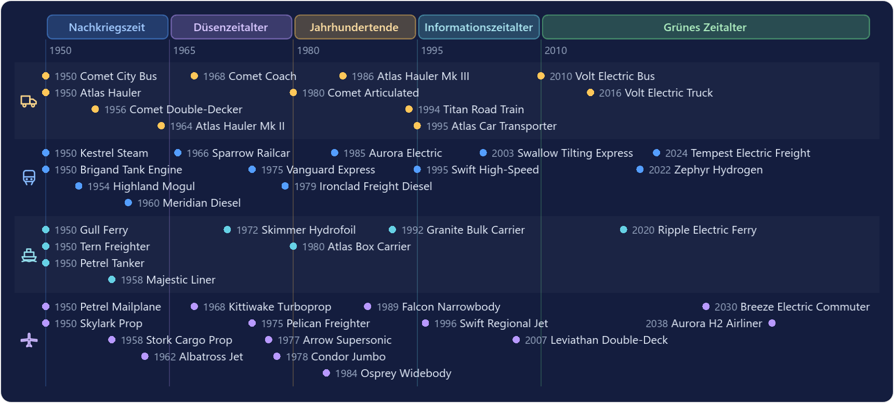

Ären
Fünf Zeitalter neuer Fahrzeuge und Gebäude.
Das Spiel beginnt 1950 oder später. Alle 15 Jahre beginnt eine neue Ära und bringt neue Fahrzeuge, Brücken und Gebäude sowie neue Industrieketten: Industrieketten.


Jede neue Ära außerdem
- hebt die Produktion jeder Mine, jedes Bauernhofs, Walds, jeder Ölquelle und Bohrinsel um 15%, außer bei einer auslaufenden Art: Ab 2010 verlieren Kohlebergwerke stattdessen jedes Jahr 3% ihrer Produktion
- lässt Betriebe aus deinen Lieferungen 10% mehr herstellen
- lässt Städte etwa 9% schneller wachsen
Die Nachrichten kündigen jedes neue Modell an. Zeitleiste (T) zeigt, was du hast und was kommt, und Jahr für Jahr listet alle Neuheiten.